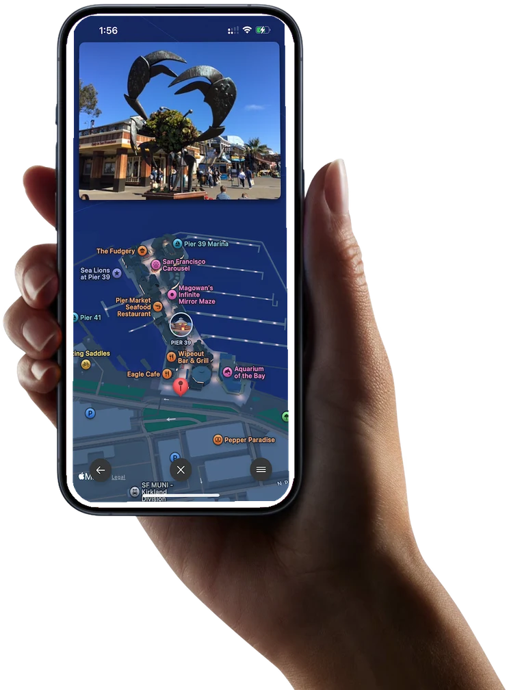
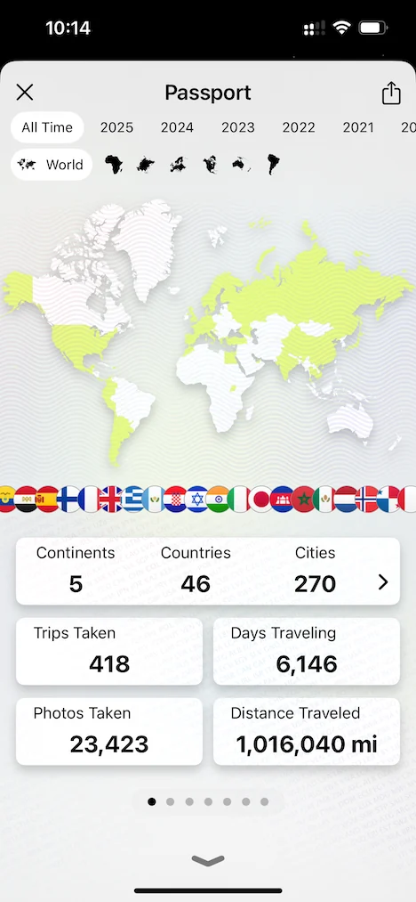
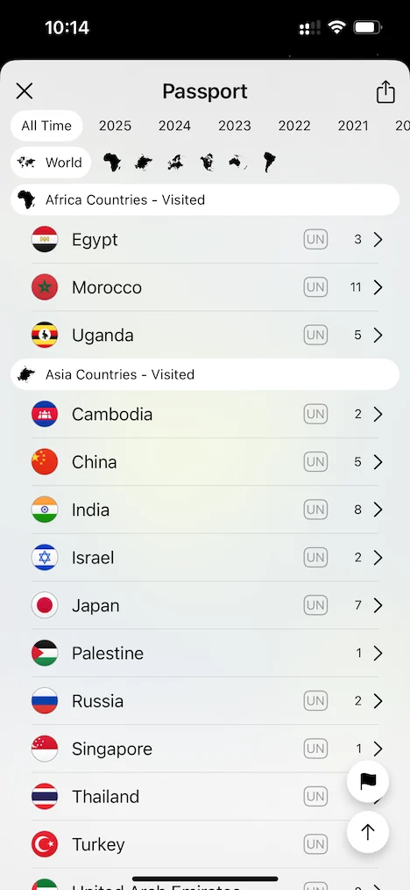
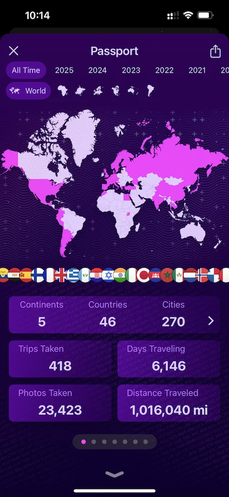
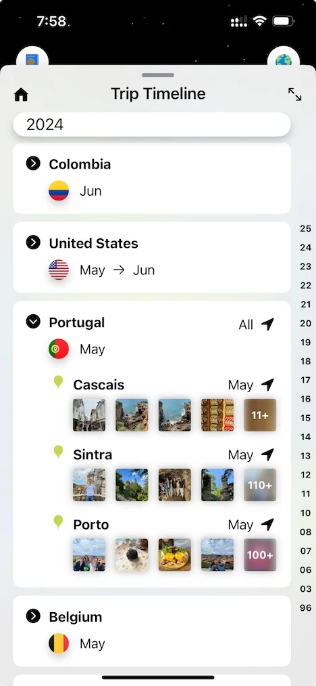
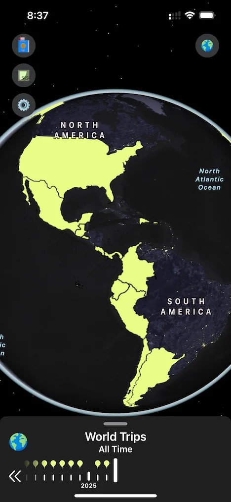

Relive your trips in 3D
Watch your journey come to life as your photos seamlessly overlay a 3D map, taking you back to every destination

Relive your trips in 3D
Watch your journey come to life as your photos seamlessly overlay a 3D map, taking you back to every destination
Right where it happened
Whether inside iconic landmarks or outside exploring, your memories stay pinned to the map
Global adventures
No matter where your journey takes you—Tokyo, San Francisco, Singapore—Odyz turns your trips into a visual story.
Passport




Travel timeline

World map

Worldwide
App Store
Odyz turns the photos already on your iPhone into a living map of everywhere you've been. No manual check-ins, no spreadsheets — just open the app and watch your trips, countries and cities fill in automatically.
Yes. Odyz runs on iPhone and iPad, and your travel history stays in sync across your devices.
Odyz reads the location and date information stored in your photos, groups them into trips, and plots them on your map and timeline. Everything is processed on your device — your photos never leave your iPhone.
Yes. Odyz is free to download and use, with an optional upgrade that unlocks the full set of features.
